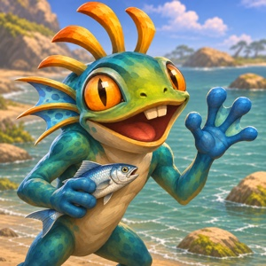

Ask a Murloc.
Send a message and hear what it has to gurgle.
Model selection is cosmetic.
Enter to send · Shift + Enter for a new line

Send a message and hear what it has to gurgle.
Enter to send · Shift + Enter for a new line